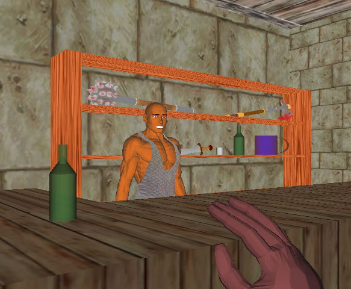

Integração X3D - Java
A apresentação de conteúdos na Internet em formato 3D é sem dúvida muito interessante e possui muitas potencialidades, especialmente se nestes mundos houver grande dose de interacção.
O X3D é um novo formato que pretende ser o standard para divulgação de conteúdos 3D, substituindo o VRML. Encontra-se, no entanto, numa fase de desenvolvimento em que ainda não está muito difundido. O X3D possui, no entanto, características interessantes e grandes potencialidades.
Para além da utilização do X3D convencional, existe a possibilidade de uma integração com a linguagem de programação externa Java. Esta possibilidade é sem duvida uma mais valia para esta tecnologia, permitindo a criação de uma grande dose de interacções com as cenas X3D.
Web Site do projetoAtravés desta fusão existe a possibilidade de se aceder aos objectos de uma cena X3D e modificar as suas características. Esta possibilidade é bastante interessante na medida que permite uma maior criação de eventos numa cena X3D, assim como modificar as propriedades da mesma em tempo real, através de um interface 2D construído em Java.
Foi desenvolvido um protótipo de um jogo estilo RPG de fantasia. O interface deste jogo está dividido em duas partes, a janela 3D onde se pode visualizar a cena tridimensional criada e se desenrola toda a acção do jogo e uma “barra” 2D criada em Java que possui todos os comandos que permitem ao jogador interagir com o mundo virtual.
O jogador poderá, ao início do jogo, escolher uma personagem e modificar algumas das suas características. Depois de iniciado o jogo, o jogador poderá explorar um mundo, realizando algumas tarefas, combatendo alguns inimigos e tentando, assim, atingir os objectivos que vão surgindo.


No âmbito deste projecto foi desenvolvido um protótipo para demonstrar todas estas potencialidades, de maneira a difundir esta tecnologia e demonstrar a sua utilização. Existe um grande número de aplicações que seria possível desenvolver, no entanto foi decidido a construção de um protótipo de um jogo. A decisão de construção de um jogo foi tomada tendo em conta alguns factores. Entre eles encontra-se o facto de um jogo permitir bastante interacção entre o jogador e o mundo, evidenciando as potencialidades do X3D. Outro factor que contribuiu para esta escolha foi a necessidade de criatividade e imaginação que são necessárias para a criação de um projecto deste tipo, o que adiciona mais um incentivo ao seu desenvolvimento.
Outros Projetos